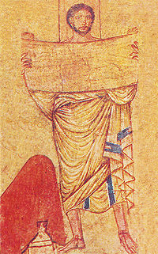

Le chiffre Atbash
Le chiffre Atbash
 Le chiffre Atbash est une méthode de cryptographie par substitution employée
par les hébreux dès 500 avant Jésus-Christ, notamment par les disciples de la Kabbale. Il consiste à remplacer chaque lettre en comptant d'abord sa place dans l'alphabet,
et en la remplaçant par la lettre occupant la même place, mais à partir de la fin de l'alphabet. Ainsi, en l'appliquant avec notre alphabet latin,
on remplace un A par un Z, un B par un Y, etc…. Pour cette raison, on l'appelle aussi code miroir. En particulier, on applique exactement
la même méthode pour chiffrer et pour déchiffrer un message, en utilisant le tableau de correspondance suivant :
| A | B | C | D | E | F | G | H | I | J | K | L | M |
| Z | Y | X | W | V | U | T | S | R | Q | P | O | N |
Et après ceux-là, le roi de Sheshach le boira aussi.
Et on trouve dans le second :
Sheshach a été capturé. Babel, la cité que le monde admire, est devenue captive.
Ces références à la ville de Sheshach étonnèrent les premiers commentateurs de la Bible, car on ne connaissait pas de villes portant ce nom.
Mais si on applique le code Atbash à cette ville, qui en hébreu s'éppelle ShinShinKaf, Shin est l'avant-dernière de l'alphabet, on la remplace par la seconde, Bet,
et Kaf, la douzième lettre de l'alphabet hébreu à partir de la fin, est remplacée par Lames, la douzième lettre à partir du début. On trouve donc
BetBetLamed, c'est-à-dire…Babel! Il reste qu'il est bien mystérieux que dans le même verset, Jérémie a écrit une fois Babel en clair, et une fois en code!
Chiffrez vos messages avec le chiffre Atbash
Le chiffre Atbash dans le Da Vinci Code
Dans le Da Vinci Code, roman de Dan Brown ayant connu un succès planétaire au début des années 2000,
il est fait mention du chiffre Atbash. D'abord, au chapitre 72, les deux personnages principaux, Robert Langdon,
professeur de symbolique religieuse, et Sophie Neveu, cryptologue, accompagnés de sir Teabing, viennent de découvrir le message suivant :
Dans un vieux mot de sagesse est la clé
Qui réunit sa famille éclatée
La tête bénie par les Templiers
Avec Atbash vous sera révélée.
Ils discutent alors de la signification de ce dernier vers.
Qui réunit sa famille éclatée
La tête bénie par les Templiers
Avec Atbash vous sera révélée.
- Le dernier vers parle d'une révélation par Atbash, dit Sophie. J'ai déjà entendu ce mot…
- Rien d'étonnant, répliqua Teabing. Vous avez dû l'apprendre en première année de fac. Le chiffre Atbash est l'un des codes les plus anciens de l'histoire.
Mais bien sûr, se dit Sophie. Le fameux système de cryptographie hébreu.
La jeune fille avait été initiée au code Atbash au début de ses études. Inventée par la Cabale dès le Vè siècle avant Jésus-Christ, il était présenté comme exemple type de chiffrage par substitution rotatoire. Il consistait tout simplement à remplacer la première des vingt-deux lettres de l'alphabet hébreu par la dernière, la deuxième par l'avant-dernière, et ainsi de suite. - L'Atbash est merveilleusement adapté à notre sujet, ajouta Teabing. On trouve des textes cryptés en Atbash dans toute la Cabale, dans Les manuscrits de la mer Morte, et même dans l'Ancien Testament, où certains mystiques et chercheurs israélites découvrent encore des significations cachées. Il est donc tout à fait logique que le Prieuré l'ait aussi utilisé.
- Le seul problème, fit remarquer Langdon, c'est que nous ne savons pas à quoi l'appliquer…
Teabing poussa un soupir.
- Il doit y avoir un mot codé sur cette stèle. C'est lui qu'il faut trouver. À la mine renfrognée de Langdon, Sophie devina que ce ne serait sûrement pas une mince affaire. Atbash est peut-être la clé, se dit-elle, mais où trouver la porte qu'elle ouvre?
On retrouve les trois protagonistes un peu plus loin dans le roman (chapitre 77). Langdon a découvert
quelle était la tête bénie par les Templiers (Baphomet). Le chapitre 76 se termine par le dialogue suivant :
- Rien d'étonnant, répliqua Teabing. Vous avez dû l'apprendre en première année de fac. Le chiffre Atbash est l'un des codes les plus anciens de l'histoire.
Mais bien sûr, se dit Sophie. Le fameux système de cryptographie hébreu.
La jeune fille avait été initiée au code Atbash au début de ses études. Inventée par la Cabale dès le Vè siècle avant Jésus-Christ, il était présenté comme exemple type de chiffrage par substitution rotatoire. Il consistait tout simplement à remplacer la première des vingt-deux lettres de l'alphabet hébreu par la dernière, la deuxième par l'avant-dernière, et ainsi de suite. - L'Atbash est merveilleusement adapté à notre sujet, ajouta Teabing. On trouve des textes cryptés en Atbash dans toute la Cabale, dans Les manuscrits de la mer Morte, et même dans l'Ancien Testament, où certains mystiques et chercheurs israélites découvrent encore des significations cachées. Il est donc tout à fait logique que le Prieuré l'ait aussi utilisé.
- Le seul problème, fit remarquer Langdon, c'est que nous ne savons pas à quoi l'appliquer…
Teabing poussa un soupir.
- Il doit y avoir un mot codé sur cette stèle. C'est lui qu'il faut trouver. À la mine renfrognée de Langdon, Sophie devina que ce ne serait sûrement pas une mince affaire. Atbash est peut-être la clé, se dit-elle, mais où trouver la porte qu'elle ouvre?
- Oui, oui, oui! s'exclama Teabing avec enthousiasme. C'est forcément Baphomet qu'évoque notre poème. La tête bénie par les Templiers.
- OK, dit Sophie. Si c'est bien Baphomet, nous voici confrontés à un nouveau dilemme. Son nom comporte huit lettres, et nous n'en avons que cinq à caser dans le cryptex.
- Ma chère petite, répliqua Teabing avec un large sourire, c'est là que le chiffre Atbash entre en jeu.
Et voici comment se déroule le déchiffrement dans le chapitre 77.
- OK, dit Sophie. Si c'est bien Baphomet, nous voici confrontés à un nouveau dilemme. Son nom comporte huit lettres, et nous n'en avons que cinq à caser dans le cryptex.
- Ma chère petite, répliqua Teabing avec un large sourire, c'est là que le chiffre Atbash entre en jeu.
Langdon était bluffé. Teabing venait d'aligner, de mémoire, sur une feuille de papier,
les vingt-deux lettres de l'alphabet hébreu certes transcrits en caractères latins, mais il les lisait maintenant à haute voix,
sans aucune erreur de prononciation.
ABGDHVZChTYKLMNSOPTzQRShTh
- Aleph, Beth, Guimel, Daleth, Hé, Vav, Zayin, Kheth, Teth, Yod, Kaph, Lamed, Mem, Noun, Samkh, Ayin, Pé, Tsadé, Qoph, Resh, Shin, Tav. L'anglais s'épongea le front d'un geste théâtral avant de reprendre :
- En hébreu classique, les voyelles ne sont pas écrites. Par conséquement, le mot "BAPHOMET" perd son a, son o, son e. Ce qui nous laisse…
- Cinq lettres, acheva Sophie. Teabing se remit à écrire.
- Voici son orthographe en hébreu. Je n'y intercale les voyelles que pour plus de clarté :B a P V o M e Th
- N'oubliez pas, bien sûr, que l'hébreu se lit de droite à gauche. Mais nous pouvons fort bien appliquer l'Atbash dans l'autre sens. Il suffira ensuite
de créer notre propre code de substitution en superposant un alphabet inversé au premier…
- Il y a une méthode plus simple et plus rapide dit Sophie en lui prenant le stylo des mains. C'est un petit truc que j'ai appris au RHI, et qui fonctionne pour tous les codes de substitution en miroir y compris l'Atbash. Elle écrivit les onze premières lettres de gauche à droite et, au-dessous, les onze dernières, de droite à gauche.
- On appelle cela la méthode par pliage. Deux fois moins compliqué, deux fois plus net.
- Belle ouvrage ! siffla Teabing. Je constate que le RHI est à la hauteur de sa réputation.
Devant la grille de substitution que Sophie venait de tracer, Langdon ressentait une excitation qu'avaient dû éprouver
les érudits qui avaient réussi à percer, à l'aide du code Atbash, le célèbre "Mystère de Sheshach". Les exégètes s'étaient heurtés pendant
des années aux références à la "cité de Sheshach", au "roi de Sheshach", au "Peuple de Sheshach" que l'on trouvait dans le
Livre de Jérémie. Cette ville ne figurait sur aucune carte ni sur aucun autre document de l'époque biblique.
Le chercheur qui avait fini par appliquer à ce mot le chiffre Atbash fit une découverte passionante : Sheshach était le nom
de code d'une autre ville légendaire de l'Ancien Testament. Le processus de décryptage avait été très simple.
En hébreu, le mot Sheshach s'épelait Sh-Sh-K. Avec l'Atbash, il devenait B-B-L, qui se prononçait Babel.
Cette trouvaille déclencha une véritable frénésie de vérifications par l'Atbash de tous les textes de la Bible. On y découvrit en quelques semaines les significations inattendues d'un nombre impressionant de mots codés. - On chauffe ! chuchota Langdon, incapable de retenir son excitation.
- À deux doigts du but, Robert ! fit Teabing.
Puis se tournant vers Sophie :
- Etes-vous prête ?
Elle hocha la tête.
- Très bien. Nous avons donc les lettres B-V-P-M-Th, que nous allons inscrire dans votre grille pour faire apparaître le mot de passe à cinq lettres. Langdon sentait son coeur battre la chamade. B-V-P-M-Th. Le soleil entrait maintenant à flots par les hublots. Il commença mentalement la conversation. B égale Sh… P égale V…
Teabing souriait comme un enfant le matin de Noël :
- Et voici ce qu'Atbash nous révèle…
Il s'arrêta net.
- Mon Dieu ! s'écria-t-il en pâlissant.
Langdon avait relevé la tête.
- Qu'y-a-t-il ? demanda Sophie.
- Vous allez avoir une belle surprise, ma chère enfant… Une surprise rien que pour vous…
- Pour moi ?
- Quelle ingéniosité ! Votre grand-père était tout simplement génial ! s'exclama-t-il en remplissant la grille. Et maintenant, roulement de tambours s'il vous plaît ! Voilà notre mot de passe.
Il leur montra ce qu'il avait écrit.Sh - V - P - Y - A
Le visage de Sophie se renfrogna :
- Et alors ?
Langdon se posait la même question.
La voix de Teabing se mit à trembler :
- Voici un véritable vieux mot de sagesse !
Langdon relut les cinq lettres.
Dans un vieux mot de sagesse est la clé.
En un quart de second, il avait compris. Pourquoi n'y avait-il pas pensé avant?
Un vieux mot de sagesse.
Teabing riait :
- On ne pouvait pas imaginer définition plus littérale.
Sophie regardait le cadran du cryptex. Teabing et Langdon avaient omis un détail.
- Attendez ! Cela ne peut pas être le mot de passe. La lettre Sh ne figure pas sur le cadran. Ce sont celles de l'alphabet latin.
- Lisez le moi à voix haute, lui dit Langdon, en vous rappelant deux choses : le symbole Sh peut se prononcer S, en fonction de son accentuation. De même que la lettre P peut se prononcer F.
- SVFYA ?
Elle ne comprenait toujours pas.
- Et le véritable coup de génie, continua Teabing, c'est que la lettre Vav sert souvent de marquage pour le son vocalique O…
Elle relut les cinq lettres à voix haute : - S… O… ph…y…a.
Elle n'en revenait pas.
- Sophia? C'est Sophia?
Langdon hochait la tête avec enthousiasme.
- Oui ! Le mot grec qui signifie sagesse. La racine de votre prénom, Sophie !
Soudain, son grand-père lui manqua terriblement. Il s'est servi de mon nom pour crypter la clé de voûte. Sa gorge se noua. Elle ne pouvait rêver plus bel hommage… Mais en jetant un coup d'oeil aux cinq lettres du cryptex, elle réalisa qu'il subsistait un problème.
- Mais… attendez… Le mot Sophie comporte six lettres. - Regardez encore le poème : votre grand-père a écrit "un vieux mot de sagesse".
- Oui ?
- En grec ancien, la sagesse se dit SOFIA.
Après avoir lu ce chapitre, il restait pour moi un grand mystère. Que peut donc bien être le RHI, référence que le traducteur
semble penser claire pour tout lecteur francophone? Après une recherche infructueuse sur internet, j'ai jeté un coup d'oeil à la version
originale, en anglais, du texte. Il y ai fait mention non du RHI, mais du Royal Holloway, qui est un des collèges les plus réputés de l'Université de Londres.
Il reste que j'espère que, dans les cours de cryptographie du Royal Holloway, on trouve des méthodes de chiffrement
bien plus évolués que l'Atbash, sans quoi leur réputation est usurpée!
- Aleph, Beth, Guimel, Daleth, Hé, Vav, Zayin, Kheth, Teth, Yod, Kaph, Lamed, Mem, Noun, Samkh, Ayin, Pé, Tsadé, Qoph, Resh, Shin, Tav. L'anglais s'épongea le front d'un geste théâtral avant de reprendre :
- En hébreu classique, les voyelles ne sont pas écrites. Par conséquement, le mot "BAPHOMET" perd son a, son o, son e. Ce qui nous laisse…
- Cinq lettres, acheva Sophie. Teabing se remit à écrire.
- Voici son orthographe en hébreu. Je n'y intercale les voyelles que pour plus de clarté :
- Il y a une méthode plus simple et plus rapide dit Sophie en lui prenant le stylo des mains. C'est un petit truc que j'ai appris au RHI, et qui fonctionne pour tous les codes de substitution en miroir y compris l'Atbash. Elle écrivit les onze premières lettres de gauche à droite et, au-dessous, les onze dernières, de droite à gauche.
- On appelle cela la méthode par pliage. Deux fois moins compliqué, deux fois plus net.
| A | B | G | D | H | V | Z | Ch | T | Y | K |
| Th | Sh | R | Q | Tz | P | O | S | N | M | L |
En hébreu, le mot Sheshach s'épelait Sh-Sh-K. Avec l'Atbash, il devenait B-B-L, qui se prononçait Babel.
Cette trouvaille déclencha une véritable frénésie de vérifications par l'Atbash de tous les textes de la Bible. On y découvrit en quelques semaines les significations inattendues d'un nombre impressionant de mots codés. - On chauffe ! chuchota Langdon, incapable de retenir son excitation.
- À deux doigts du but, Robert ! fit Teabing.
Puis se tournant vers Sophie :
- Etes-vous prête ?
Elle hocha la tête.
- Très bien. Nous avons donc les lettres B-V-P-M-Th, que nous allons inscrire dans votre grille pour faire apparaître le mot de passe à cinq lettres. Langdon sentait son coeur battre la chamade. B-V-P-M-Th. Le soleil entrait maintenant à flots par les hublots. Il commença mentalement la conversation. B égale Sh… P égale V…
Teabing souriait comme un enfant le matin de Noël :
- Et voici ce qu'Atbash nous révèle…
Il s'arrêta net.
- Mon Dieu ! s'écria-t-il en pâlissant.
Langdon avait relevé la tête.
- Qu'y-a-t-il ? demanda Sophie.
- Vous allez avoir une belle surprise, ma chère enfant… Une surprise rien que pour vous…
- Pour moi ?
- Quelle ingéniosité ! Votre grand-père était tout simplement génial ! s'exclama-t-il en remplissant la grille. Et maintenant, roulement de tambours s'il vous plaît ! Voilà notre mot de passe.
Il leur montra ce qu'il avait écrit.
- Et alors ?
Langdon se posait la même question.
La voix de Teabing se mit à trembler :
- Voici un véritable vieux mot de sagesse !
Langdon relut les cinq lettres.
Dans un vieux mot de sagesse est la clé.
En un quart de second, il avait compris. Pourquoi n'y avait-il pas pensé avant?
Un vieux mot de sagesse.
Teabing riait :
- On ne pouvait pas imaginer définition plus littérale.
Sophie regardait le cadran du cryptex. Teabing et Langdon avaient omis un détail.
- Attendez ! Cela ne peut pas être le mot de passe. La lettre Sh ne figure pas sur le cadran. Ce sont celles de l'alphabet latin.
- Lisez le moi à voix haute, lui dit Langdon, en vous rappelant deux choses : le symbole Sh peut se prononcer S, en fonction de son accentuation. De même que la lettre P peut se prononcer F.
- SVFYA ?
Elle ne comprenait toujours pas.
- Et le véritable coup de génie, continua Teabing, c'est que la lettre Vav sert souvent de marquage pour le son vocalique O…
Elle relut les cinq lettres à voix haute : - S… O… ph…y…a.
Elle n'en revenait pas.
- Sophia? C'est Sophia?
Langdon hochait la tête avec enthousiasme.
- Oui ! Le mot grec qui signifie sagesse. La racine de votre prénom, Sophie !
Soudain, son grand-père lui manqua terriblement. Il s'est servi de mon nom pour crypter la clé de voûte. Sa gorge se noua. Elle ne pouvait rêver plus bel hommage… Mais en jetant un coup d'oeil aux cinq lettres du cryptex, elle réalisa qu'il subsistait un problème.
- Mais… attendez… Le mot Sophie comporte six lettres. - Regardez encore le poème : votre grand-père a écrit "un vieux mot de sagesse".
- Oui ?
- En grec ancien, la sagesse se dit SOFIA.
Consulter aussi